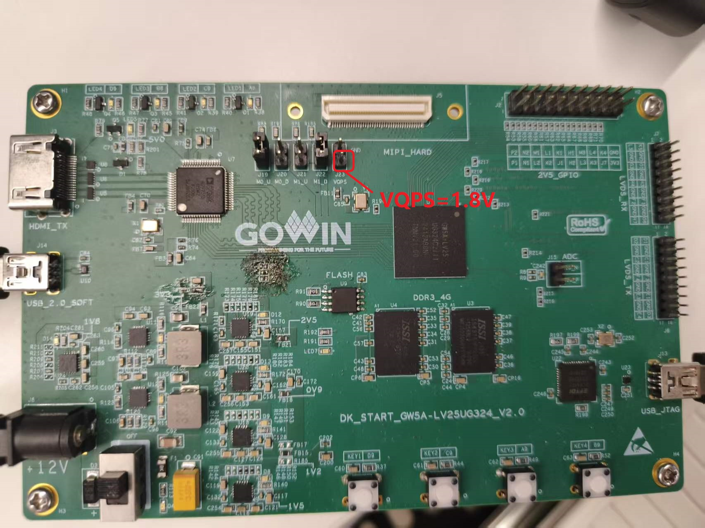

| 版本 | 日期 | 描述 | 作者 |
|---|---|---|---|
| V1.0 | 2026-10-14 | 初始版本。实现USB3.2 带宽测试功能，支持正反插。 | zefeng |
| V1.1 | 2026-11-4 | 增加 免驱DFU 功能。 | zefeng |
| V1.1.1 | 2026-11-11 | 更新配套的测试工具，修正部分描述错误。 | zefeng |
本工程实现了一个基于 FPGA 的 USB 3.2 复合设备，包含 USB 带宽测试(Read/Write BandWidth Test, RWBW) 和 DFU背景升级 (Device Firmware Upgrade) 两个核心功能。其中，RWBW带宽测试有配套的带宽测试软件 USB_RWBWTest_V1.0.2，该软件与 DFU 升级工具等均已统一集成于 Gowin_USB_tools 工具箱软件中，方便用户集中选择调用，可进行读写一致性测试以及读写压力测试。
系统支持基于标准 DFU 协议的在线背景升级功能。为确保设备的高可靠性与防“砖”能力，底层采用了 Multi-Boot 多重启动架构对 8MB(GD25Q64ESIG)/16MB(W25Q128JVSIQ) 的 SPI Flash 空间进行了严格划分：
0x0000000，作为 DFU 更新的目标区域；0x0100000 地址，作为系统恢复的底层安全基线；0x0200000 及以上）分配给 UMS 功能作为数据存储区。0x0300000）均是针对 GW5AT-60 系列生成的 .bin 位流文件大小设定的。用户在实际开发时，可根据所使用的具体芯片型号对该地址进行调整。举例参考：
.bin 文件约占用 800 KB ，建议将黄金位流地址调整为 0x0100000 ；.bin 文件约占用 4850 KB ，建议将黄金位流地址调整为 0x0500000。系统顶层模块 Top 负责整合时钟网络、USB 物理层 (SoftPHY)、USB 协议层以及具体的业务子系统。该架构实现了从 USB 接口到底层 SPI Flash 以及物理 UART 逻辑引脚的数据互通。
系统顶层 Top 暴露的物理引脚矩阵如下：
| 接口分类 | 信号引脚名称 | 方向 | 功能描述 |
|---|---|---|---|
| 系统控制 | sys_clk_p/sys_clk_n |
Input | 200MHz 差分系统时钟输入 |
LED |
Output | 复位完成与系统状态指示灯 | |
| USB 物理层 | \src\ip\serdes\serdes.csr |
Inout | USB3.2 相关接口 |
| SPI Flash | spi_sclk |
Output | SPI 时钟 |
spi_cs |
Output | SPI 片选信号 (低电平有效) | |
spi_mosi |
Output | SPI 主机输出/从机输入 (MOSI) 数据线 | |
spi_miso |
Input | SPI 主机输入/从机输出 (MISO) 数据线 |
系统内部按逻辑域划分为以下主要子系统，各模块之间协同实现 USB 3.2 高速数据流处理与在线固件升级功能。
TLVDS_IBUF 接收外部差分时钟，并利用 ELVDS_OBUF 输出 200MHz 参考时钟驱动底层物理层。系统核心控制逻辑的工作时钟 (pclk) 则由 USB 3.2 PHY 直接提供。sys_rst_n, phy_resetn, phy_resetn2)，以此避免上电初期的亚稳态，确保 SerDes 锁相环的安全初始化。SerDes_Top (USB 3.2 物理层)：利用 FPGA 底层的高速硬核 SerDes 资源，实现 USB 3.2 协议的物理信号收发，并向协议层提供标准的 PIPE 数据总线 (如 phy_pipe_rx_data, phy_pipe_tx_data) 及控制接口。USB3_2_Device_Controller_Top (USB 3.2 核心控制器)：处理高速 USB 通信的链路层与协议层逻辑。负责维持 LTSSM (链路训练状态机)、包组装与解析、CRC校验及数据加解扰，并将总线事务转化为各端点 (Endpoint) 的标准化读写请求。顶层的 UserLayer_top 模块负责统筹设备的各种控制请求与特定的业务数据交互：
设备的免驱在线升级功能被深度集成在用户逻辑与系统顶层状态机中：
UserLayer_top 内的控制模块会拉高 o_dfu_detach_flag 触发信号。顶层逻辑捕获该脉冲后，立即翻转当前操作模式 (dfu_mode)，并启动一个为期 500ms 的强制定时器 (disconnect_timer)。usb_logic_rstn 信号（等同于模拟 VBUS 掉电），迫使 PC 认为设备已被物理拔出。定时器归零后设备自动恢复工作，从而以新模式重新枚举。0x0000000 工作位流区，且过程不会干扰其他扇区的数据。为了方便用户管理与测试，所有的配套上位机工具均统一集成在 Gowin_USB_tools 工具箱软件中。用户打开 Gowin_USB_tools 后，可根据测试需求点击启动对应的测试软件（如 USB带宽测试 或 固件升级 ）。

图 4-1：Gowin_USB_tools 软件中转站主界面
在 Gowin_USB_tools 中选择启动 USB带宽测试。这是一款 USB 设备读写与带宽测试工具，支持简体中文与 English 双语界面。该软件可对设备进行高强度的读写一致性验证与极限吞吐量测试。

图 4-USB_RWBWTest_V1.0.2 软件主界面
一致性测试用于验证 FPGA 端点收发数据的准确性，通过比对下发与回传的数据负载来判断通信链路是否可靠。

图 4-2：读写一致性测试运行状态
带宽与压力测试用于测试当前环境下实际的传输速率。提供实时的速率统计，结果将反馈至界面右侧的 READ/WRITE 动态仪表盘中。

图 4-3：双向带宽压力测试与实时仪表盘
本系统采用 Multi-Boot 多重启动架构，为了实现安全的远程升级与数据隔离，系统将外部 W25Q128JVSIQ SPI Flash (16MB) 的物理地址进行了如下映射：
0x000000：工作位流 (Working Image)，DFU 协议的默认下载与擦写目标地址。0x300000：黄金位流 (Golden Image)，出厂固化的安全备份区域。该地址可以自定义。DK_USB_GW5AT-LV60UG225_V1.0/V1.1开发板 VQPS 引脚默认下拉接地，因此此时无法进行 黄金地址写入操作。 请直接跳转至 4.2.4 使用 dfu-util 执行升级测试
0 修改为 1 将永远无法恢复）。操作前请务必仔细核对！

黄金位流地址设定：
0x800_000，但实际上默认地址为 0x000_000。0x300_000），点击“Write”按钮。若提示“Write Success”，则表示写入成功。
AES 密钥设定：
Arora V 家族 FPGA 产品支持比特流数据加密，采用 128bit 的 AES 加密算法。用户可以在编译时加入 AES 密钥。器件上电后将会识别含有预设 AES 密钥的加密位流以及未加密的位流，并自动跳过 AES 密钥不匹配的加密位流。


更具体的说明可见《UG714-Arora V 25K FPGA Products Programming and Configuration Guide》 —— 4.3 Security
为了保证防砖机制能够正常介入，在交付前或首次测试前，需先通过硬件下载器将稳定版本的 golden_DFU_V1.0.fs 固件烧录至黄金地址。
External Flash Mode Arora V。0x300000。0x000000。✅ 当前 DFU 升级功能已实现免驱支持，设备连接后 Windows 系统将自动加载驱动，无需额外配置，即连即用。
注：若使用早期固件版本（V1.0）或遇到自动识别异常时，可参考以下手动驱动配置步骤：
Options → List All Devices，确保工具能读取当前所有的 USB 物理设备。
本节主要验证通过 DFU (Device Firmware Upgrade) 接口向开发板外部的 SPI Flash 写入新固件的功能。测试提供了两种可选方式：使用图形化配套软件，或使用开源命令行工具 dfu-util。
本次测试使用配套的 dfu_tool.exe 软件向开发板写入新固件。用户可以通过打开 Gowin_USB_tools 中转站，在界面中选择“固件升级”启动该 DFU 升级工具。
测试环境与注意事项
Gowin_USB_tools\Tool_DFU\dfu_tool.exe测试软件与 dfu-util.exe 以及 libusb-1.0.dll 位于同一文件夹目录下，或者已将 dfu-util 的路径成功添加至系统环境变量中，否则将导致下载功能无法调用。升级操作步骤
.bin 固件文件。.bin 文件下载至开发板的 spi_flash 中。此时，下方的输出窗口会实时显示实际的下载进度。
测试固件说明
附件的 DFU_bin 文件夹中提供了以下几个固件供测试使用：
5A60_USB2_HIFI+HID+DFU.bin —— 在DK_USB_GW5AT60-LV60UG225_V1.0开发板上运行的 USB2.0 复合设备，包含 HIFI+HID+DFU功能。5A60_V1.0_RWBW+DFU_V1.1.1.bin —— 在DK_USB_GW5AT60-LV60UG225_V1.0开发板上运行的 USB3.2 复合设备，包含 BULK带宽测试+DFU功能。5A60_V1.1_RWBW+DFU_V1.1.1.bin —— 在DK_USB_GW5AT60-LV60UG225_V1.1开发板上运行的 USB3.2 复合设备，包含 BULK带宽测试+DFU功能。您也可以使用跨平台的开源命令行工具 dfu-util 进行测试。请确保已将 dfu-util 添加至系统的环境变量中。
步骤 1：准备固件位流文件
在工程综合工具中，右键打开 Configuration —— BitStream —— General —— Bitstream Format，选择 Binary。编译完成后，软件会在 pnr 文件夹中生成对应的 .fs、.bin 以及 .binx 固件文件。准备好需要更新的 .bin 文件（例如命名为 update_v2.bin）。

步骤 2：枚举并识别设备
打开命令行终端 (CMD / PowerShell)，输入以下命令检查设备是否被正确识别：
dfu-util -l若驱动正常，终端将列出当前支持 DFU 的设备，并显示对应的 VID 与 PID（如 33AA:1800）。
步骤 3：下发新固件
在终端中执行以下命令，触发设备从 APP 模式切换至 DFU 下载模式：
dfu-util -e随后，执行以下命令发起下载：
dfu-util -d 33AA:1800 -a 0 -D update_v2.bin参数说明：
-d 33AA:1800：指定目标设备的 VID:PID。-a 0：指定更新目标为 Alt Setting 0，底层逻辑会自动映射至 Flash 的 0x000000 地址。-D：指令为 Download（下载指定固件至设备）。
步骤 4：背景升级监控与状态说明
执行下载命令后，终端会出现下载进度条。此时，USB 控制器接收数据流，并驱动 SPI Flash 控制器对 0x000000 区域执行擦写操作。
0x000000 加载新固件。
步骤 5：复位与多重启动验证 (防砖测试)
0x000000 失败时，会自动触发多重启动机制，回退并加载位于 0x300000 备份地址的黄金位流 (Golden Image)。系统依靠黄金位流成功启动后，您可以重新使用 DFU 对 0x000000 地址覆盖下载正确的位流文件，以此验证设备的自恢复能力。